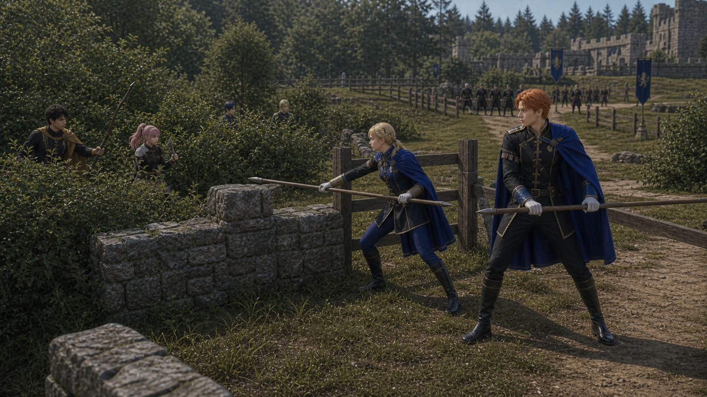
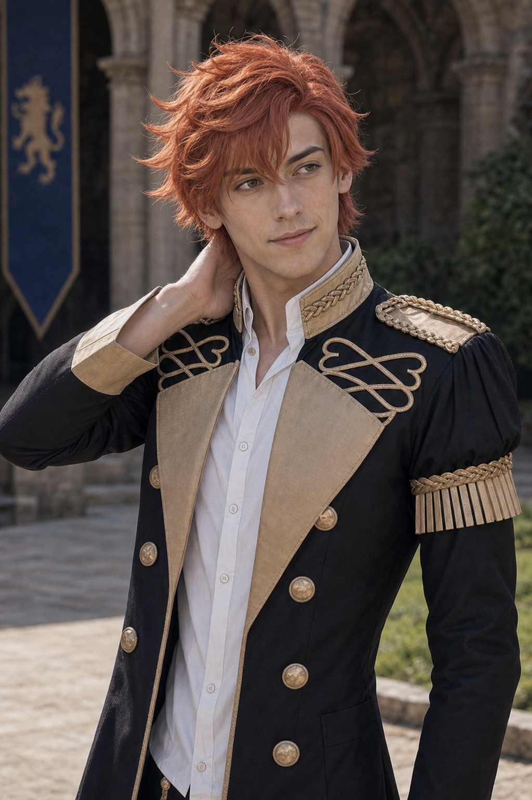
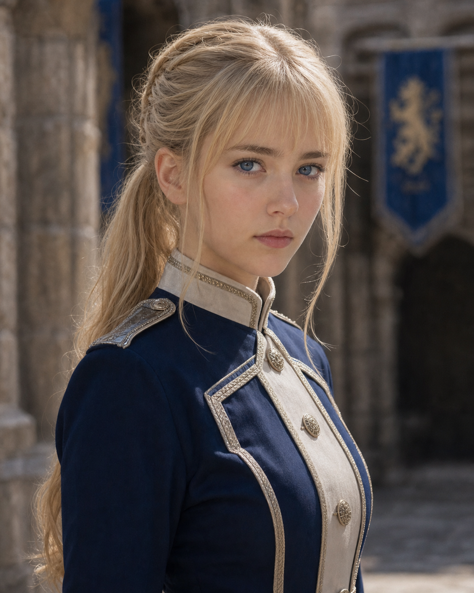
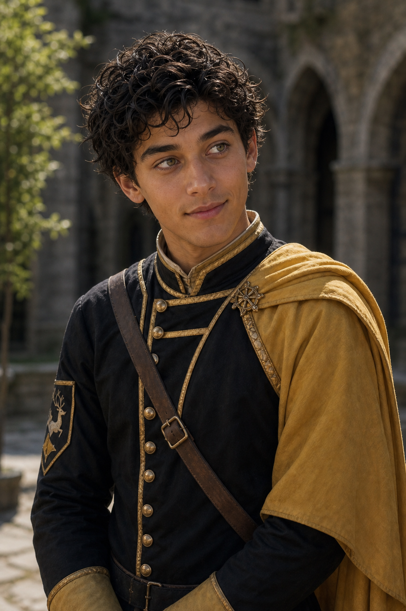
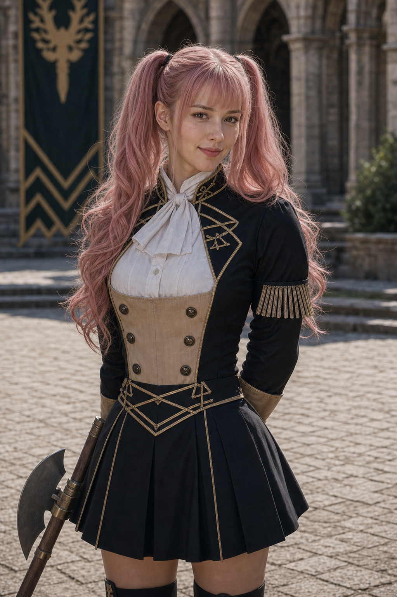

P0 Scene09 Reference Board
Index
镜头029：青狮西侧轮转
Wide flank setup / Sylvain and Ingrid lance monitor
Generated Keyframe

Character Reference Assets

Sylvain
red-orange-haired Blue Lions lancer, flank containment
assets/characters/blue_lions/Sylvain/academy/selected.png

Ingrid
blonde Blue Lions lancer, disciplined route cutter with long training lance
assets/characters/blue_lions/Ingrid/academy/selected.png

Claude
Golden Deer leader, bow pressure from thicket
assets/characters/golden_deer/Claude/academy/selected.png

Hilda
youth identity v4 pink twin ponytails, compact training axe if visible
assets/characters/golden_deer/Hilda/academy/selected.png
Subframes
分镜点 A：入场地理关系
Establish the exact geography for Sylvain / Ingrid Side Flank: Sylvain draws Golden Deer pressure in thicket while Ingrid cuts through low wall and grass.
episodes/EP02/generated/mock_battle_production_keyframes_2026-07-17/Shot029_A_keyframe.png
分镜点 B：动作峰值
Show the tactical peak with Sylvain, Ingrid, Claude, Hilda using their locked character assets and academy costumes.
episodes/EP02/generated/mock_battle_production_keyframes_2026-07-17/Shot029_B_keyframe.png
分镜点 C：反应与剪切点
End on the reaction or reposition that motivates the next shot while preserving screen direction.
episodes/EP02/generated/mock_battle_production_keyframes_2026-07-17/Shot029_C_keyframe.png
Production Prompt
Create a production-ready cinematic live-action storyboard start/key pair for EP02 Scene09, Shot029 Sylvain / Ingrid Side Flank.
Frame content: wide flank setup only. Sylvain and Ingrid guard the Blue Lions right flank near low wall and fence, both turned west/northwest toward Golden Deer thicket pressure. Sylvain and Ingrid both carry unmistakably long wooden training lances; Ingrid must not have a sword, dagger, or short blade. Golden Deer are only partial thicket pressure here; Shot029B carries the detailed Golden Deer flank high-light.
Direction: Golden Deer pressure comes from west/screen-left; Sylvain and Ingrid look toward that threat, not camera. Distant Black Eagles remain north/right-depth to keep the three-sided field readable.
The setting is the canon-inspired Garreg Mach outdoor academy mock battle field: one continuous tactical map with grass, low stone walls, wooden barriers, west thickets, stone steps, and a northeast raised healing-sigil platform. Use wooden or blunted academy practice weapons only. No blood, no injury, no lethal impact, no UI. Keep named students academy-age and identity-locked to selected.png assets.